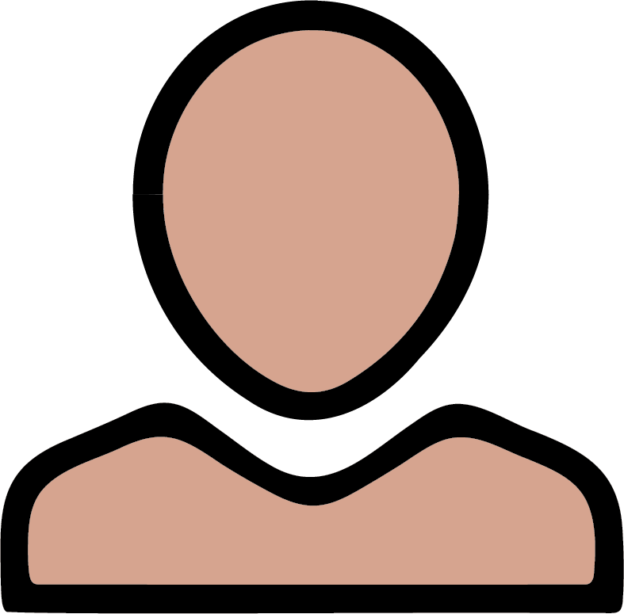
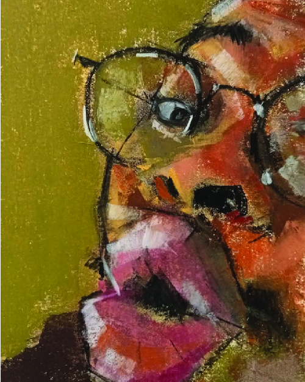

Free · Peer-to-peer · Confidential
Supporting Mental Health
on your PhD Journey
We connect current PhD students with PhD graduates who've walked a similar path — to listen, share, and make the journey less isolating.
How it works
- 1Sign up for free
- 2Get matched with PhD graduates
- 3Choose your buddy & set your pace
- 4Talk confidentially
What we offer
- Peer support, not therapy
- Empathetic listening
- Help at any stage of your PhD
We believe that shared experience is a powerful form of support and healing.
Why Join PhDbuddy?

As a Graduate Buddy
Gain a connection with people who understand and can relate to you.
Learn from the firsthand experience of someone who has already completed their PhD and explored life after it.
You might find PhDbuddy helpful if any of the following resonate with you — just to name a few examples:
- Are you feeling overwhelmed and unsure about how to talk to your supervisor?
- Are you questioning whether continuing your PhD still makes sense for you and what your next steps might be?
- Do you feel like an outsider in your academic environment and struggle to connect with colleagues?
As a Post-Graduate Buddy
Have you ever wished you could go back to your first-year PhD self and share your hard-earned advice with them? While going back in time is not an option (yet), this is your chance to make a meaningful impact on someone else's PhD journey.
Gain a new perspective on your own experiences — you might find that all the highs and lows of your journey can become valuable lessons to share.
Build new connections and help create a kinder, healthier research culture.
PhDbuddy is about community, empathy, and making the PhD experience kinder for everyone.
What to Expect
We match PhD students with post-graduates from our team.
After you sign up, three post-graduate buddies are made available for you to connect with – you can get to know all of them and have conversations with whoever you choose or is available.
We define the structure of the conversation together based on your needs and goals.
We have open conversations with you about the non-academic, social, organizational, and mental challenges of your PhD journey.
The conversations can happen as often as the graduate and post-graduate buddies agree on.
We are not medical professionals, but we are open to listening, sharing our experiences, and offering new perspectives.
These conversations will be confidential.

About Us
Organizing Team & Post-Graduate Buddies
Organizer
Hi, I'm Jona and I want to be a writer when I grow up. I could chat to you about music, movies, existential doom or just tell you stories about my cat. Happy to meet you!
Organizer
Hello, I'm Alina. I find joy in playing in an orchestra, getting lost in books, and water — on it through rowing and in it through scuba diving. I'm here hoping to offer the kind of non-academic support I wish I'd had during my PhD.
Post-Graduate Buddy
Hey there, I'm Olivia. Outside of science, I enjoy all things circus, languages, home-fermenting and winter swimming. While PhDs tend to be all-consuming, I believe in the importance of keeping some non-science in our lives.
Post-Graduate Buddy
I'm Laura 👋 I know first hand how hard doing a PhD can be, so I am very happy to now be a listening ear for whoever needs it ☺️


Post-Graduate Buddy
My name is Nzumbi, and I'd be happy to lend an ear and listen, if you'd like to share. I happen to like art 🎨👨🏾🎨